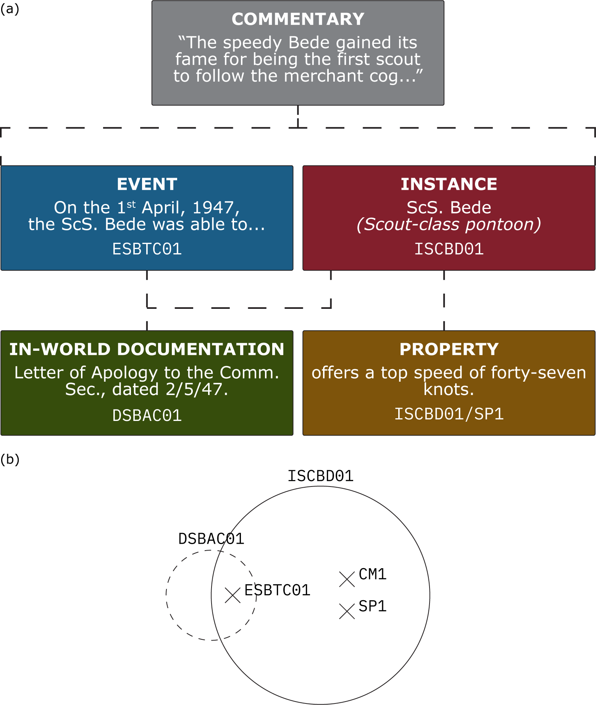

Networked World-Building
December 2020

I promise that all will be explained!
1. The Flockchain
My friends and I went out to the bar the other night, and we had a lot of fun coming up with vast and nonsensical ideas about life and the world. One such concept we developed was something I call the “flockchain”: an abstract method of storing, networking, and transmitting facts for the purposes of research, analysis, and – ideally – the improvement of the world. A blockchain, in general terms (and beware that this is heavily caricaturised), stores data such that the \(n^{th}\) token requires the \(n-1^{th}\) for its validation, the \(n+1^{th}\) is dependent on the \(n^{th}\), and so on. This forms the blockchain \[\{N_0,\,N_1,\,N_2,\,\cdots,\,N_n\}\] where a ‘chain of validation’ links \(N_n\) right back to the root \(N_0\) token. This paradigm has found most of its popularity through its use in crypto-currency, and for good reason: having each financial transaction verified by the last creates a strong and secure chain, copies of which are held by each user and are compared against one another for veracity.
History itself is not dissimilar: everything that is happening right now is necessarily dependent on all of the events and states that came before, because it is the sum of those motives which produced the unique and exclusive world in which we operate at this very instant. I’m not just sitting here writing this because I decided to; there were millions of technological advancements and social changes (amongst many other things) which let me sit down at the computer and write in this moment!
Our thinking was that, with the flockchain (which itself depends on machine learning, artificial intelligence, and a number of impractible and impossible technologies), we could record, network, and verify all of these facts, providing a massive inter-linked stream of data which would be openly accessible to all, like the world’s biggest API. Users could analyse trends, improve workflows and pipelines, and collect undistorted data in crucial yet under-represented areas such as inequality and oppression.
Of course, the flockchain is both impractical, and ridden with deep flaws and omissions – and that’s the point. It’s a provocative thought experiment designed to encourage discussion across a number of fronts. Who would make sure this data was safe and protected; is the blockchain enough? Who gets access to what data – if this wasn’t handled properly, wouldn’t the system just create more inequality and spur a more severe power imbalance? What about corruption?
2. Networked Fiction
But while the real world is unready for a flockchain, I have recently become very curious to try out the scheme in a fictional, fantasy setting. In fact, I think that the system would thrive there! I’d like to present a small case study which explains the basics of this scheme (the core rules are really quite simple), but first, the basics. Everything in our world is represented by a node, which is either a piece of information or a container for a group of information. There are only three classes of node which exist in-world: instance nodes (I-class), event nodes (E-class), and document nodes (D-class).
“ScS. Bede”
Scout-class pontoon
ISCBD01
The speedy Bede gained its fame for being the first scout to follow the merchant cog MhS. Olander through the Eldritch portal it had disappeared into. Aside from its prominent place in the history of Vosdence, the pontoon itself is relatively nondescript, being a simple ScS (scout-class) vessel made by the dozen for patrols and routine missions helmed by the Commerce Chamber.
- ISCBD01/CM1 ⊃ owned jointly by the Maritime Division of the Commerce Chamber and the Consulate’s Internal Security Wing.
- ISCBD01/SP1 ⊃ offers a top speed of forty-seven knots.
- DSBAC01 2/5/47 Letter of Apology to the Comm. Sec.
- ESBTC01 1/5/47 The ScS. Bede was able to re-establish telegraphic contact with the Commerce Radio Board […]